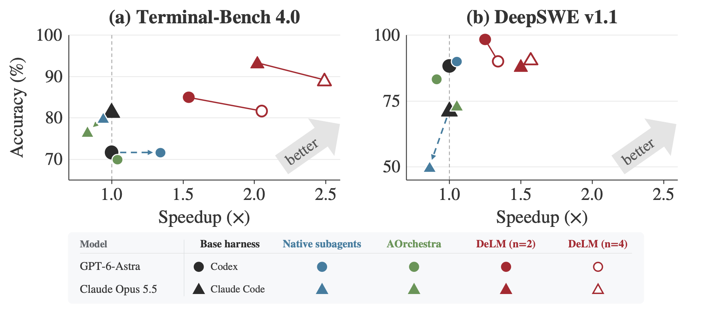
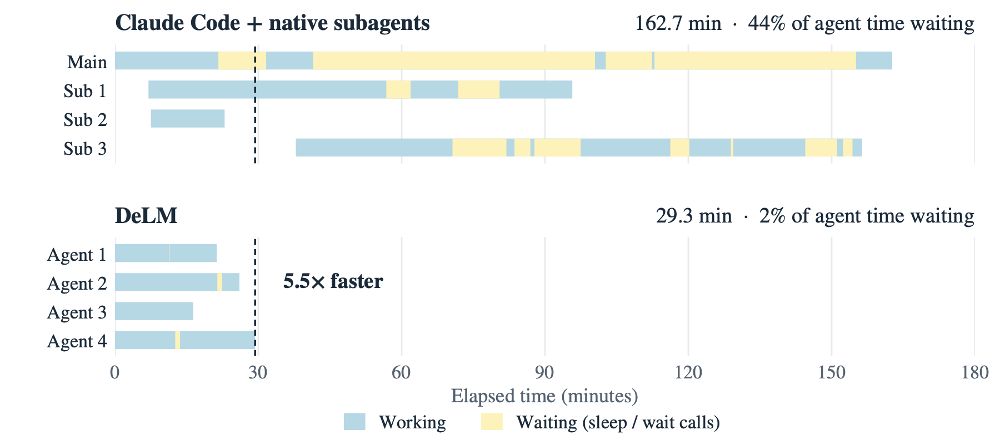
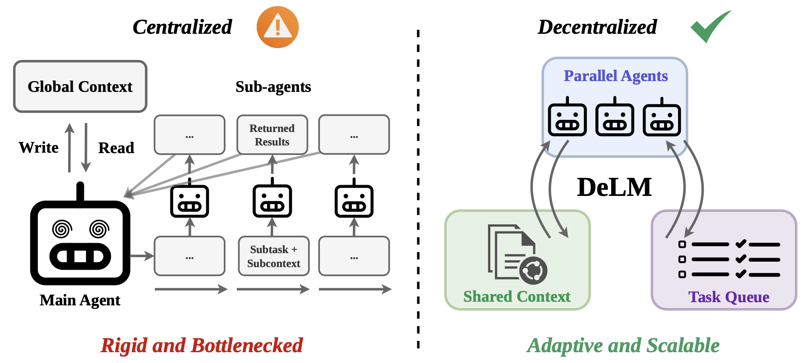
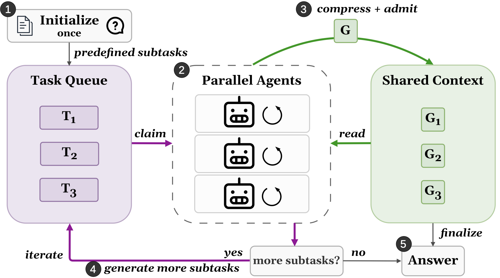
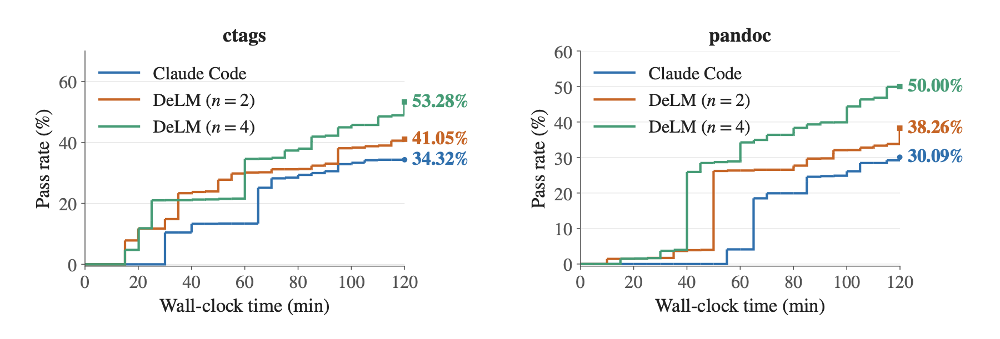
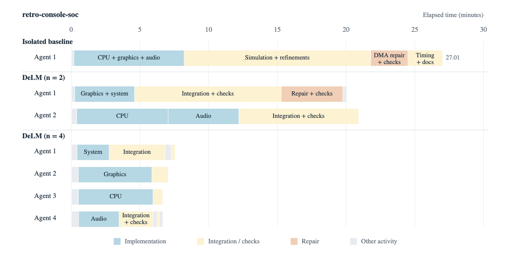

Existing multi-agent systems waste much of their parallelism in bubbles: agent time spent waiting on others or redoing a peer's work. DeLM squeezes out most of these bubbles by having agents coordinate asynchronously through a shared context and a task queue, with no main agent in the loop.

Multi-agent systems (MAS) offer a natural way to scale large language model reasoning at test time: instead of solving a complex task in a single trajectory, they decompose it into subtasks, dispatch agents in parallel, and aggregate their progress. Borrowing a term from pipeline parallelism, we call agent time that does not advance the solution a bubble: time an agent spends waiting on others, or redoing work a peer has already done. Bubbles waste compute and stretch wall-clock time, and each of the three dominant families of MAS creates them in its own way.
Their bubbles are redundant work: agents share nothing while they run, so each one rediscovers the faults, fixes, and dead ends its peers have already found.
Their bubbles are barrier waits: each synchronous round lasts as long as its slowest agent, so agents that finish early sit idle.
Their bubbles are relay waits: the main agent idles while delegated work runs, and sub-agents cannot build on each other's progress until the main agent relays it.

retro-console-soc task with Claude Opus 5.5 and four agents. With Claude Code's centralized native subagents, the main agent spends 73% of its time waiting on delegated work (yellow), and 44% of all agent time is spent waiting.
We propose Decentralized Language Models (DeLM), a coordination layer that squeezes out these bubbles by having agents coordinate asynchronously through a shared context and a task queue, with no main agent in the loop.
| General collaboration capabilities | Explicit coordination mechanisms | |||||
|---|---|---|---|---|---|---|
| System | Parallel subtask execution | Cross-agent work reuse | Feedback & correction | Intermediate-results sharing | Peer-status awareness | Stateful shared context |
| Isolated agents | ✕ | ✕ | ✕ | ✕ | ✕ | ✕ |
| AOrchestra | ✕ | ✓ | ✓ | ✕ | ✕ | ✕ |
| Codex | ✓ | ✓ | ✓ | ✓ | ✕ | ✕ |
| Claude Code | ✓ | ✓ | ✓ | ✓ | ✕ | ✕ |
| DeLM | ✓ | ✓ | ✓ | ✓ | ✓ | ✓ |
Given a task D, DeLM runs n agents concurrently, each with its own persistent session and workspace. Agents coordinate through two shared structures, a shared context C and a task queue T, and each agent produces its own complete solution.

These operations proceed asynchronously rather than in lockstep: while one agent publishes a result, others keep working and can reuse it as soon as it appears.
An append-only log of what agents learn. Each entry has a declared type: FACT records a finding supported by observations, FAIL records an approach or hypothesis that was contradicted, and DONE summarizes a finished subtask. Entries stay brief and attach files by reference, so the log stays under 15K tokens even with four agents.
Divides the work among agents, with no planner in charge. Any agent can add tasks or claim open ones at any time, and the first claim wins. Every task shows whether it is open, claimed, or done, and by whom, so each agent knows who is responsible for what and how much remains.
We evaluate DeLM on four agentic coding benchmarks: Terminal-Bench 4.0, where agents share discovered environment state and failed attempts in live terminals; DeepSWE v1.1, where agents reuse each other's debugging progress on long-horizon software engineering tasks; SWE-bench Verified, where agents explore alternative root causes and fixes for real GitHub issues; and ProgramBench, where agents rebuild entire programs from scratch. We compare against Codex and Claude Code, with and without native subagents, AOrchestra, and, on SWE-bench Verified, mini-SWE-agent.
Because DeLM targets long-horizon tasks where coordination matters, we evaluate on a subset of long-running tasks from Terminal-Bench 4.0 and DeepSWE v1.1. We select tasks based on the wall-clock latency of Codex with GPT-6-Astra: for Terminal-Bench 4.0, we select 10 tasks with latency between 15 minutes and 1 hour; for DeepSWE v1.1, we select 10 tasks with latency of at least 10 minutes.
| Terminal-Bench 4.0 | Codex Latency |
|---|---|
ks-solver-cpp | 21.00 min |
telecom-entity-resolution | 24.23 min |
vf2-speedup-networkx | 23.42 min |
biped-contact-dynamics | 21.56 min |
cumulative-layout-shift | 39.34 min |
retro-console-soc | 27.28 min |
rs-archive-clone | 21.92 min |
wdm-design | 39.27 min |
lake-temp-glm | 32.40 min |
payments-pipeline-fix | 18.67 min |
| Average | 26.91 min |
| DeepSWE v1.1 | Codex Latency |
|---|---|
oxvg-structural-selector-preservation | 19.71 min |
wasmi-trap-coredumps | 14.55 min |
happy-dom-abort-pending-body-reads | 12.52 min |
scriggo-method-declarations | 17.35 min |
dynamodb-toolbox-lazy-recursive-schemas | 22.19 min |
dynamodb-toolbox-conditional-attribute | 16.78 min |
opa-template-string-reconstruction | 13.99 min |
boa-hierarchical-evaluation-cancellation | 13.28 min |
numba-stencil-boundary-modes | 15.91 min |
pebble-durability-wait-apis | 19.38 min |
| Average | 16.57 min |
Selected tasks from Terminal-Bench 4.0 and DeepSWE v1.1. Baseline latency is the average execution time of the Codex baseline using GPT-6-Astra at xhigh reasoning effort.
| Method | Avg. Acc (%) | Avg. Latency | Speedup | Cost/Task | Cost/Submission |
|---|---|---|---|---|---|
| GPT-6-Astra | |||||
| Codex | 71.67 ±11.55 | 26.91 ±0.91 min | 1.00× | $9.01 ±0.71 | $9.01 ±0.71 |
| Codex (subagent) | 71.67 ±11.69 | 20.04 ±1.94 min | 1.34× | $25.80 ±2.21 | $25.80 ±2.21 |
| AOrchestra | 70.00 ±5.00 | 25.78 ±1.15 min | 1.04× | $11.94 ±1.02 | $11.94 ±1.02 |
| DeLM (n = 2) | 85.00 ±13.23 | 17.47 ±1.82 min | 1.54× | $13.65 ±1.49 | $6.83 ±0.74 |
| DeLM (n = 4) | 81.67 ±12.33 | 13.16 ±1.43 min | 2.05× | $23.90 ±2.27 | $5.97 ±0.57 |
| Claude Opus 5.5 | |||||
| Claude Code | 81.67 ±2.89 | 130.75 ±6.27 min | 1.00× | $20.31 ±0.23 | $20.31 ±0.23 |
| Claude Code (subagent) | 80.00 ±5.00 | 138.58 ±10.17 min | 0.94× | $30.88 ±3.17 | $30.88 ±3.17 |
| AOrchestra | 76.67 ±5.77 | 157.21 ±9.03 min | 0.83× | $24.22 ±1.05 | $24.22 ±1.05 |
| DeLM (n = 2) | 93.33 ±3.33 | 64.77 ±5.03 min | 2.02× | $17.91 ±1.17 | $8.96 ±0.59 |
| DeLM (n = 4) | 89.17 ±5.20 | 52.51 ±4.43 min | 2.49× | $29.98 ±0.91 | $7.50 ±0.23 |
| Method | Avg. Acc (%) | Avg. Latency | Speedup | Cost/Task | Cost/Submission |
|---|---|---|---|---|---|
| GPT-6-Astra | |||||
| Codex | 88.33 ±2.89 | 16.57 ±0.39 min | 1.00× | $9.40 ±0.18 | $9.40 ±0.18 |
| Codex (subagent) | 90.00 ±0.00 | 15.76 ±2.05 min | 1.05× | $24.97 ±3.15 | $24.97 ±3.15 |
| AOrchestra | 83.33 ±7.64 | 18.31 ±1.08 min | 0.91× | $10.74 ±0.97 | $10.74 ±0.97 |
| DeLM (n = 2) | 98.33 ±2.89 | 13.29 ±0.98 min | 1.25× | $16.83 ±1.65 | $8.42 ±0.82 |
| DeLM (n = 4) | 90.00 ±10.00 | 12.37 ±0.66 min | 1.34× | $30.87 ±1.09 | $7.72 ±0.27 |
| Claude Opus 5.5 | |||||
| Claude Code | 71.67 ±2.89 | 49.58 ±3.11 min | 1.00× | $12.01 ±0.60 | $12.01 ±0.60 |
| Claude Code (subagent) | 50.00 ±10.00 | 57.46 ±2.16 min | 0.86× | $19.83 ±0.99 | $19.83 ±0.99 |
| AOrchestra | 73.33 ±5.77 | 47.32 ±2.86 min | 1.05× | $12.11 ±0.52 | $12.11 ±0.52 |
| DeLM (n = 2) | 88.33 ±2.89 | 32.98 ±2.47 min | 1.50× | $11.89 ±0.53 | $5.95 ±0.26 |
| DeLM (n = 4) | 90.83 ±8.78 | 31.61 ±0.96 min | 1.57× | $24.49 ±0.67 | $6.12 ±0.17 |
With Claude Opus 5.5, the gains are larger: DeLM (n = 4) reaches 90.83%, 17.5 points above the strongest baseline, AOrchestra (73.33%), and runs 1.57× faster than Claude Code.
| Method | Avg. Acc (%) | Avg. Latency | Speedup | Cost/Task | Cost/Submission |
|---|---|---|---|---|---|
| Gemini 3 Flash | |||||
| Claude Code | 49.32 ±1.98 | 129.13 ±5.12 s | 1.00× | $1.00a ±0.00 | $1.00a ±0.00 |
| mini-SWE-agent | 54.73 ±2.37 | 91.78 ±3.53 s | 1.41× | $0.26 ±0.07 | $0.26 ±0.07 |
| AOrchestra | 55.26 ±2.03 | 89.94 ±3.07 s | 1.44× | $0.24 ±0.04 | $0.24 ±0.04 |
| DeLM (n = 2) | 63.72 ±2.29 | 71.86 ±2.88 s | 1.80× | $0.24 ±0.05 | $0.12 ±0.03 |
| DeLM (n = 4) | 66.08 ±1.86 | 61.01 ±2.63 s | 2.12× | $0.47 ±0.07 | $0.12 ±0.02 |
a The Claude Code CLI sends cache_control blocks in the Anthropic API format, so cache reuse only works if the upstream provider honors those blocks. For Gemini-3-Flash the real cost without cache reuse is therefore around $1 per task.
With n = 4, DeLM reaches 66.08% accuracy, 10.8 points higher than the strongest baseline, AOrchestra (55.26%).


retro-console-soc task with GPT-6-Astra.A single agent builds the CPU, graphics, and audio in sequence and finishes in 27.0 minutes. With n = 2, one agent builds the graphics and system components while its peer builds the CPU and then the audio, finishing in 20.9 minutes (1.29×). With n = 4, separate agents build the system, graphics, CPU, and audio concurrently, and the task finishes in 7.5 minutes (3.6×).
DeLM exposes every agent's claims, status, and stated scope through the task queue and shared context, so an agent can notice an overlap while its search is still running and redirect. In one four-agent run, Agents 1 and 3 independently began tuning the same port widths and positions. Agent 1 then saw Agent 3's claim through the shared context:
[agent-3/FACT] [...] I will tune only w_in,w_long,w_short,y_long,y_short [...] [agent-1/FACT] [...] applying the cavity artifact revealed agent-3 had just claimed the same five-parameter port tuning. [...] [agent-1/EXEC] kill -TERM 770 [agent-1/EXEC] python binary_refine.py [...]
The agents resolve the overlap themselves, before either search finishes, without a main agent having to detect the duplication and re-plan.
Because updates and corrections are appended as new entries that reference revised files, rather than overwriting old ones, an agent can re-import a peer's updated work at any time. Across 720 agent trajectories on Terminal-Bench 4.0 and DeepSWE v1.1, agents imported shared files 5,237 times, and 80.3% of trajectories later imported a revised version of a file they had already imported. Because agents publish short summaries and attach files by reference, the shared context averages under 15K tokens at task completion.
| Terminal-Bench 4.0 | DeepSWE v1.1 | ||||
|---|---|---|---|---|---|
| Model | Agents | Context (k) | Cost (%) | Context (k) | Cost (%) |
| GPT-6-Astra | n = 2 | 7.31 ±0.42 | 9.17 ±0.38 | 7.54 ±0.21 | 7.71 ±0.18 |
| n = 4 | 12.88 ±0.97 | 17.68 ±0.25 | 13.03 ±0.96 | 14.56 ±0.37 | |
| Claude Opus 5.5 | n = 2 | 6.62 ±0.34 | 1.92 ±0.11 | 4.67 ±0.11 | 1.69 ±0.06 |
| n = 4 | 14.48 ±0.47 | 3.66 ±0.29 | 10.43 ±0.53 | 3.04 ±0.23 | |
@misc{mao2026delm,
title = {Decentralized Multi-Agent Systems with Shared Context},
author = {Yuzhen Mao and Jerry Gu and Aadi Chauhan and
Qizheng Zhang and Hangoo Kang and Azalia Mirhoseini},
year = {2026},
eprint = {2606.10662},
archivePrefix = {arXiv},
primaryClass = {cs.MA},
url = {https://arxiv.org/abs/2606.10662}
}